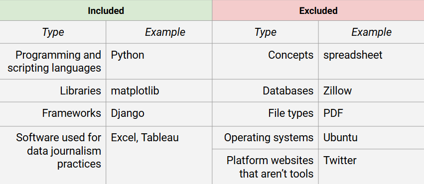
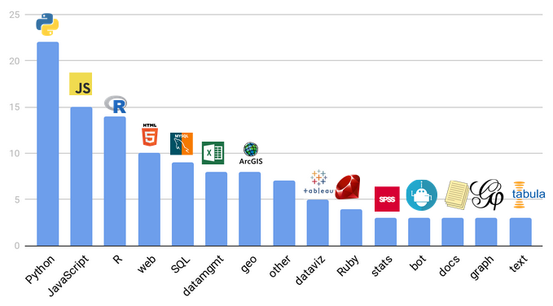
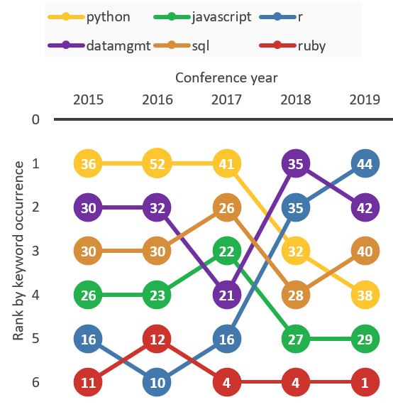
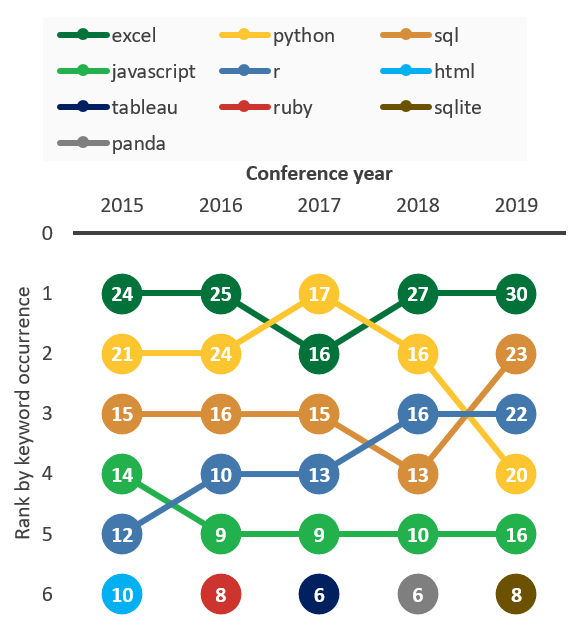
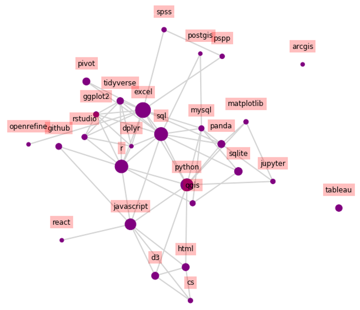

A Content Analysis of CAR Conference Session Descriptions
I conceived and executed this Information Science Senior Project during Fall 2019 with Professor Martin Schedlbauer at Northeastern University. The paper was peer-reviewed and accepted into the 2020 Computation + Journalism Symposium.
The evolving field of data journalism has been the subject of some scholarship, but no systematic analysis of specific technologies used. This study builds on previous surveys and case studies of newsrooms by discovering trends in software and programming languages used by practitioners. Keyword discovery is performed to assess the popularity of such tools in the data journalism domain, under the assumption that topics discussed at the major conference in the field reflect technologies used by practitioners. The collected and categorized data enables time trend analyses and recommendations for practitioners and students based on the current technology landscape. While certain technologies can fall out of favor, results suggest the software Microsoft Excel and programming languages Python, SQL, R and JavaScript have been used consistently by data journalists over the last five years.
Research questions
There is a need for research exploring how data journalism practices have changed over time. This study aims to expand on prior scholarship by gleaning technologies and skills practiced by data journalists. By examining trends in tools discussed at a major conference in the field, the study provides an in-depth look at where data and digital journalism has been and is going in terms of specific programming languages, software and tools.
This goal of this project was to implement keyword discovery to discover trends of how the popularity of particular technologies have changed over time in the domain of data journalism. The hypothesis assumes that topics and technologies discussed at the major conference in the field reflect the state of where the industry is going and tools what practitioners are learning how to use around the time of each conference. The study aims to answer the following research questions:
What technologies, languages and libraries are used in the practice of data journalism?
How have these technologies of data journalism changed over time?
Methodology
The analyzed corpus comes from the annual Computer-Assisted Reporting (CAR) conference. The CAR conference is organized by the nonprofit Investigative Reporters and Editors (IRE) and its program the National Institute for Computer Assisted Reporting (NICAR). Though focused on data journalism, some conference topics also branch into other digital skills such as web development. Speakers are mainly industry professionals discussing current technologies used in their newsrooms. Thus, conference session descriptions seem to be a representative and useful source of current and upcoming technologies in the field.
After text preprocessing, word counts were retrieved for each unique word and counted once per session description. The lists of over 2000 unique words for each conference were manually analyzed and cross-referenced to extract technology keywords. For simplicity, only unigrams were extracted. The extracted keywords were then categorized, mostly based on programming language and type of tool.
Overview of included/excluded keyword types

Results
Five years of conference talks were analyzed, from 2015-2019. Out of an average of 2622 unique words per conference, 117 keywords were extracted and labeled into 15 categories: Python, JavaScript, R, web, SQL, datamgmt (data management/ wrangling), geo (geospatial/GIS-related), dataviz (GUI data visualization tools), other, Ruby, stats (statistics-related), bot, docs (document management tools), graph, text.
Categories by unique keywords count

The top categories by number of unique keywords were: Python, JavaScript, R, web, and SQL. This stacked area chart shows mentions of names of major programming languages and related keywords. The python category had the most keywords overall. SQL and JavaScript were fairly consistent over the 5 years. The number of R keywords jumped in 2018 and stayed relatively large in 2019. The relatively small number of Ruby keywords declined over the same time period.
Mentions of major programming language keywords by category
The same categories are shown in this ranking chart, with the addition of the "datamgmt" category (mostly Excel). R’s jump above all the other categories in 2019 is prominent.
Ranking of categories per keyword occurrences

This chart ranks specific keywords (some of which are also category names). While the top five keywords moved around within that range, the sixth-ranked keyword changed every year.
Top keywords by occurrence

Discussion
Though I can only draw limited conclusions from analyzing these five years of data, there are a few themes and practical takeaways. The 15 categories of keywords show the breadth technologies discussed at the CAR conference and that may be used by practitioners of data and other forms of digital journalism. The diversity of languages discussed, as well as libraries and tools for each language indicate that there may be many paths for similar end goals. Additionally, the prevalence of JavaScript at a data journalism-focused conference indicates a demand for journalists to also develop user-facing applications.
This network graph includes keywords mentioned in at least two conference descriptions in 2019. The nodes are sized by number of occurrences, and edges represent keywords that were mentioned in at least one of the same session descriptions. The variety of links between keywords, like the edge between R and JavaScript, indicates practitioners may be expected or desire to know a wide range of skills.
Network of keywords with multiple mentions in CAR19 conference talks

The findings also indicate that certain technologies may fall out of favor and use over time. This has been shown in previous research on development trends. According to a 2019 IEEE conference paper analyzing GitHub repositories from 2009-2017, “JavaScript” has been a key front-end web development language over the last decade. This research found interest in “jQuery” and “html” have declined as “react” has grown in popularity since 2012. The analysis of technologies mentioned at the CAR conference indicate journalism web development trends may follow these overall industry trends.
Still, some technologies seem to remain the prevailing standard, namely Excel. Microsoft’s spreadsheet software was by far the most common keyword overall. Excel’s consistent top ranking may be explained by the software’s relative longevity and accessibility to journalists who may have never programmed before but want to store and analyze data. Mentions of pivot tables, a key feature in Excel for summarizing data, have increased in the most recent conferences.
Limitations
There are several possible drawbacks to solely analyzing this data source of conference session descriptions:
Novel tools are introduced at conferenced that may never be widely used.
Companies can sponsor sessions on their own products.
Extrapolations to the wider field assume conference topics and attendees are representative of the industry.
Additionally, there are many challenges with analyzing unstructured text:
Manual keyword recognition and extraction performed was limited by my knowledge, familiarity, and human error. I tried to look up possible keywords whenever I did not recognize them.
Technology names that are common English words caused some confusion.
I only extracted unigrams for simplicity, excluding bigrams/trigrams like "amazon mechanical turk".
Because many different people wrote these session descriptions, colloquial references of technology names could be inconsistent.
For practitioners: The data journalism technology landscape in 2019
Finally, it is worthwhile to look at the most recent top words to assess the current landscape based on 2019 conference data. Keywords were counted as top here if they occurred in at least three unique descriptions in 2019. These findings are suggestions about which tools and libraries are popular in the current and upcoming landscape, which could be useful for students and professionals to exploring technologies for journalism.